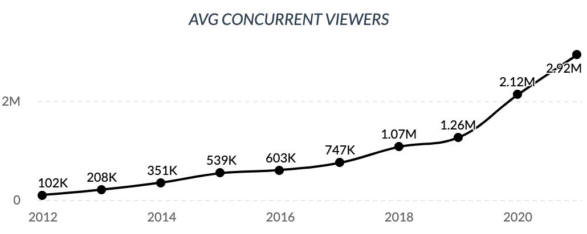
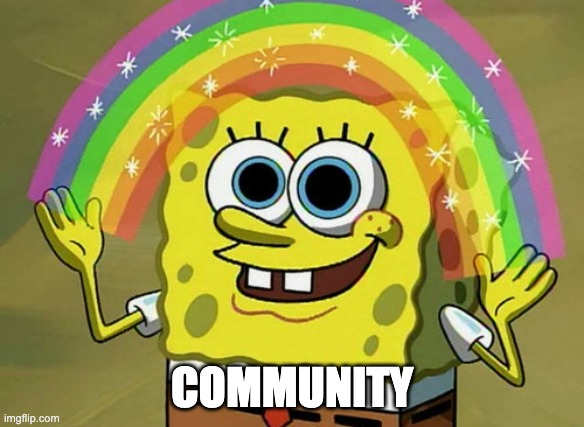

A few notes before beginning:
In recent years, livestreaming has blown up in popularity, to the point that Twitch (formerly and originally Justin.tv, and now owned by Amazon—surprise, surprise) has become just one of many platforms. So-called "content creators" have now flocked to YouTube, Microsoft, and Facebook, some motivated by the companies' lucrative deals. Twitch viewership grew steadily from its 2011 inception up to March 2020, when it spiked due to the COVID-19 pandemic began and quarantine procedures were in full effect.
But what makes livestreaming just so popular? How can someone get so much enjoyment out of watching someone else play video games, or even "just chatting" without any activities?
The main reason seems to be that streamers often tout their channel as not just a channel where people watch games, but a community where they belong and their thoughts matter and are heard. This warm, fuzzy, false feeling of welcomeness and inclusivity appeals immensely to marginalized groups—they now have a voice, as opposed to being ignored at their school/job.
Streamers capitalize on this by branding their communities with a special nickname or crew name. NICKMERCS, the second most popular Twitch streamer by subscriber count, calls his community MFAM: Mercs FAMily. New subscribers are often personally welcomed into the MFAM by Nick himself during the stream, giving them their three seconds of fame and a second life of being forgotten and ignored. That is, until they contribute again. Why would someone acknowledge a random viewer in the chat? There can be thousands of them. But if you drop five gifted subs (the equivalent of $25), that'll get the streamer's attention and they may give you a shoutout. Hey, look! Three more possible seconds of fame!
This concept is called a parasocial relationship, best defined as:
Parasocial relationships are one-sided relationships, where one person extends emotional energy, interest and time, and the other party, the persona, is completely unaware of the other’s existence.
The viewer is obviously the one extending "motional energy, interest and time", while the streamer has no idea, and by extension no care, about the viewer. But does the viewer realize this? I can't say for sure. I'd expect that more than 50% of viewers know that the person they're watching doesn't know/care about them. My observations in watching the chats of a few popular streams is that it's a small percentage, judging by the messages that appeal directly to the streamer, e.g., "Hey [name] [question]", and donations in the form of bits, direct payment, or subscriptions. Not rigorous or comprehensive by any means, but good enough for me.
Parasocial relationships arguably go hand-in-hand with role modeling, which has significant issues associated with it. Typical advice tells you to never meet your heroes. I take it a step further and say never have heroes in the first place. There are people I respect, people I applaud for what they've contributed and accomplished, but there is no one I wish to emulate. I want to be original. I want to contribute my own ideas to the world. I want to be my own person. And here's the prescription I warned about: other people should want this. Who wants to be unoriginal? Who wants to take on the personality of someone who doesn't know, much less care, about them?
The other problem with role modeling is the quality of the personality.